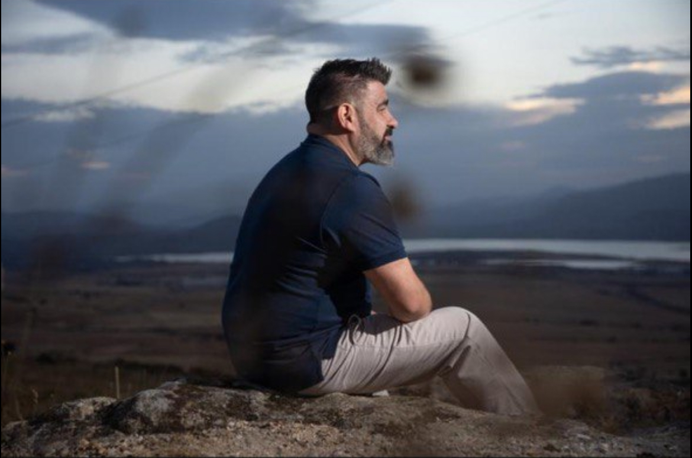
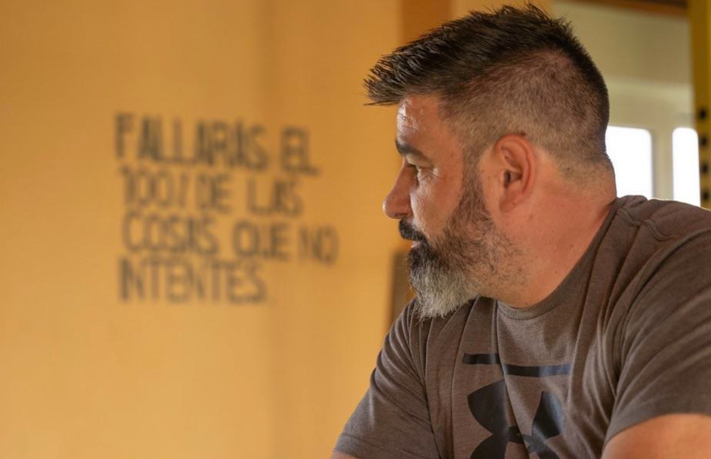
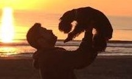
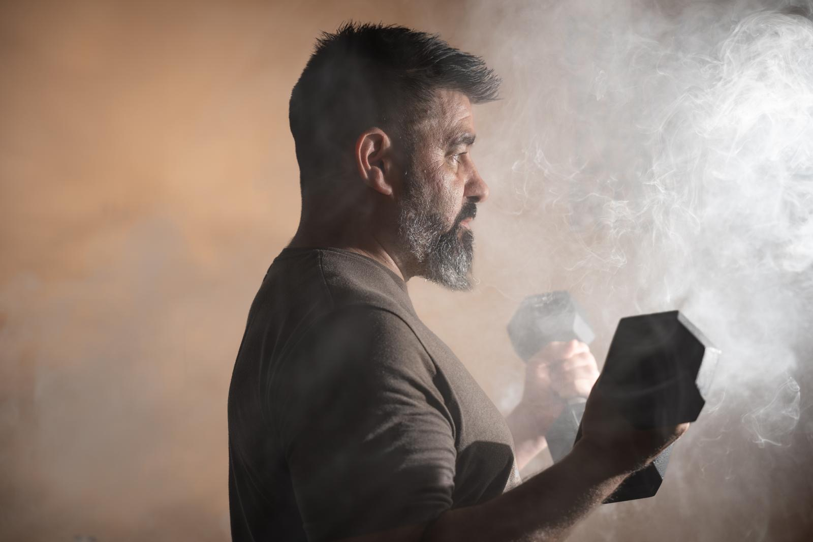
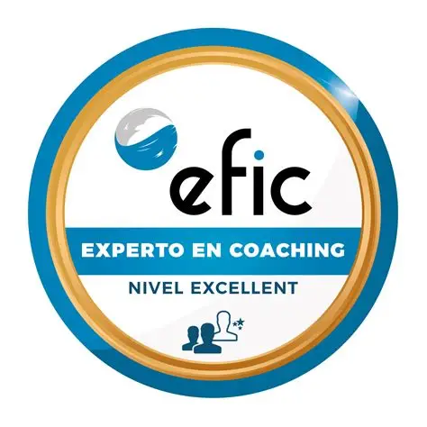

Escucha y claridad
Partimos de tu situación real: lo que te preocupa, lo que deseas y lo que te impide avanzar. Desde ahí, aclaras tus objetivos y encuentras dirección.
Todo pasa, todo llega...
Mi camino hacia el coaching tiene mucho que ver con aprender a escuchar de verdad. Curiosamente, algunas de las lecciones más profundas de escucha y comprensión las aprendí en compañía de mis mascotas. Al pasear con Brujita o Ilmen, o montando a caballo con Curioso, descubrí que podía hablar sin filtros y sentirme realmente escuchado. Fue en esos momentos, en medio de la naturaleza y la compañía leal, donde entendí la importancia de un espacio seguro para ser uno mismo.
Para mí, ver a alguien encontrar esa claridad y esa confianza es lo que da sentido a mi trabajo. Es como devolver un poco de esa escucha y ese apoyo que encontré en esos paseos con mis compañeros de cuatro patas. Por eso, decidí crear este espacio, especialmente para adolescentes, para que puedan crecer sabiendo que no están solos y que tienen un lugar donde sus objetivos pueden convertirse en realidad.

Partimos de tu situación real: lo que te preocupa, lo que deseas y lo que te impide avanzar. Desde ahí, aclaras tus objetivos y encuentras dirección.
Transformas tus metas en acciones pequeñas, sostenibles y realistas. Cada paso te ayuda a avanzar con confianza y a mantener el impulso.
Sin juicios y con compromiso. Cuentas con perspectiva, estructura y apoyo durante todo el proceso, siempre desde el respeto a tu ritmo y decisiones.

A lo largo de mi vida profesional he recorrido caminos muy distintos: empecé en hostelería, pasé cinco años como militar mientras estudiaba automoción, trabajé en el mundo comercial, fui conductor de camión y casi dos décadas en una multinacional, me enseñaron el valor de la constancia, el esfuerzo y el trabajo en equipo. Esa experiencia variada me permitió conocer de cerca lo que significa adaptarse, reinventarse y mantener la motivación, incluso en momentos de incertidumbre. Hoy transformo todo ese recorrido, en acompañamiento para otras personas. Mi propósito es motivar, dar claridad y demostrar que cada paso, incluso los más difíciles, pueden convertirse en una oportunidad de crecimiento.
La familia siempre ha sido un pilar en mi vida: la de sangre, los amigos que se conviertieron en hermanos y la que hoy disfruto como mi propio hogar. De todos ellos aprendí el valor del respeto, la lealtad y la importancia de estar presente. No todo ha sido fácil, también atravesé momentos duros que me enseñaron resiliencia, paciencia y la fuerza de seguir adelante a pesar de las dificultades. Hoy convierto esas vivencias en inspiración y en la base de mi manera de acompañar, para que cada persona encuentre confianza y motivación en su propio camino.


El deporte y los hábitos saludables siempre han sido parte importante en mi vida, aunque no siempre estuve en mi mejor momento. Hubo años en los que fui consciente de lo que necesitaba, pero no encontraba la fuerza para mantenerlo. Esa experiencia me enseñó que la constancia no siempre es fácil, y que retomar el camino, también forma parte del proceso. Hoy, entrenar, moverme y cuidar mi alimentación vuelven a ser una base que me da energía, claridad y motivación. Y desde esa vivencia, transmito que nunca es tarde para recuperar el equilibrio y avanzar.
HABLEMOS POR WHATSAPP
Actualmente estoy completando la Certificación Internacional Experto en Coaching Personal y Ejecutivo y el Programa Superior de Crecimiento y Liderazgo Personal y Profesional en EFIC (Escuela de Formación Integral de Coaching). Es una formación intensiva y de alto nivel que combina PNL, neurociencia, inteligencia emocional y prácticas reales de coaching. Este proceso me permite integrar herramientas contrastadas y seguir en un camino de aprendizaje continuo para acompañar con mayor calidad y compromiso.
Formación destacada:

“Tu futuro no se construye de golpe, se pone en movimiento paso a paso. Hoy puede ser tu momento de empezar.”